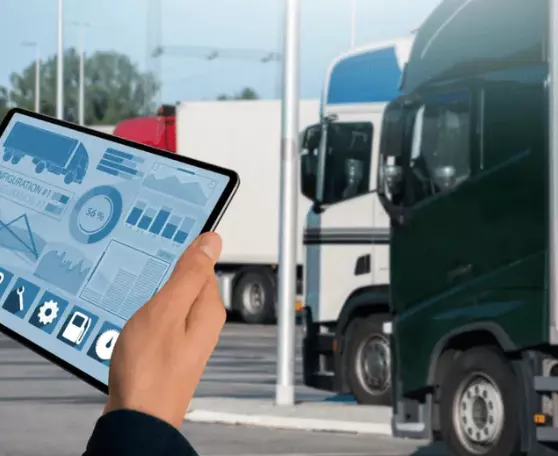
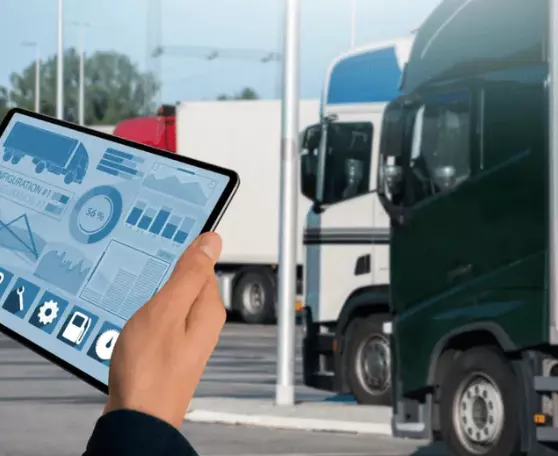
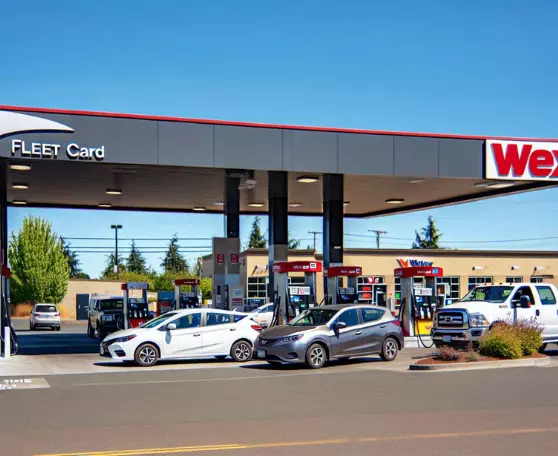
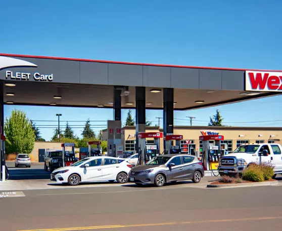

3741 Hickory Lane,
Washington, D.C.
Washington, D.C.
Our comprehensive guide to Fleet Fuel Card programs is designed to offer a deep dive into the essential elements of managing your corporate fleet's fuel expenses efficiently. The journey begins with understanding "What Are Fleet Fuel Cards?" and their transformative impact on your business's fuel efficiency. Explore sections on "Understanding the Concept of Fleet Fuel" to grasp its nuances and how these cards, like the WEX Fuel Cards, operate. Discover the importance of spending controls and how they contribute to fleet efficiency, leading to significant savings and enhanced operations. We highlight the "Benefits of Fuel Cards for Fleet Management", where you'll find rewards and cost savings as significant incentives. Not sure if you need a fleet card? Learn "Who Should Use a Fleet Card?" and explore practical insights into fleet operations and business solutions. You'll also gain knowledge about choosing the best fleet fuel card providers, ensuring your network covers 95% of U.S. gas stations, and real results from real fleets.
 

Fleet fuel cards are essential tools in modern fleet management, offering a convenient payment method for fuel purchases that enhances operational efficiencies. As part of comprehensive fleet card programs, these cards allow fleet managers to track fuel expenses meticulously while providing transparent insights into spending habits. The use of fleet fuel cards, or simply fuel cards, enables businesses to streamline their fleet's refueling processes, improving overall productivity. A fleet card provides centralized billing, making it easier to manage budgets and reduce administrative burdens. By using a fleet fuel card, companies can take advantage of available discounts and rewards, ultimately leading to cost savings. With the convenience of card fleet usage, drivers can refuel at vast network locations, ensuring minimal downtime. Not only do fleet fuel cards increase security against fraud through spending limits, but they also offer detailed transaction reports for better business decision-making. Worldwide, companies recognize the value of integrating fuel cards into their operations, enhancing both their fleet's efficiency and their bottom line. Investing in a fleet fuel card is a strategic choice for any organization seeking streamlined operations and financial control.
Fleet fuel refers to the strategic management of fuel purchases for businesses operating fleets of vehicles. A fleet is a grouping of multiple vehicles, which could range from cars to diesel-powered trucks, utilized by a business to carry out its daily operations. Optimizing fleet fuel consumption is crucial for managing costs and ensuring productivity within a company. With a robust fuel program in place, corporations can efficiently monitor fuel purchases and reduce overhead costs significantly. A fleet fuel card serves as an essential tool in this regard, providing the necessary controls and insights to manage fuel consumption effectively. These cards, often associated with gas purchases, offer businesses the ability to centralize their fueling expenditures, track usage, and even outline specific fueling locations for drivers. A well-implemented fuel program can enhance the operational efficiency of fleets, providing significant savings and precise usage metrics. Thus, understanding the needs of your business and selecting an appropriate fuel card is paramount to achieving superior fleet management.
Understanding how WEX fuel cards operate can significantly enhance your management of fleet expenses. WEX fuel cards, such as the WEX FlexCard, are designed to streamline fuel purchases and provide extensive spending controls for fleets of all sizes. This program offers a card solution that allows businesses to effectively monitor fuel expenses and ensure cost efficiency. The WEX FlexCard, one option among fleet fuel cards, provides detailed tracking of fuel purchases, empowering fleet operators to set spending controls based on their unique operational needs. By utilizing WEX fuel cards, businesses can maintain a comprehensive overview of spending patterns and adjust strategies accordingly. Fleet cards like these are essential tools within the program, providing flexibility and convenience by enabling transactions at numerous fuel stations nationwide. Whether you’re managing a small or large fleet, fuel cards, like the WEX FlexCard, are instrumental in optimizing your fleet operations, providing transparency, and helping to achieve cost-saving goals while enhancing overall fleet efficiency.
Effective spending controls are essential in optimizing fleet efficiency for any business. Implementing robust controls within a Fleet Fuel Card program can significantly enhance your fleet management strategies. By monitoring expenses and regulating fuel usage, fleet operations can achieve substantial cost savings, contributing to improved financial performance. A versatile option like the Fleet Fuel Card offers various services tailored to meet your unique needs, ensuring that every program aligns with your objectives. This card program empowers businesses to apply spending controls that directly influence fleet efficiency by integrating advanced monitoring systems into daily operations. By leveraging the extensive range of features available, businesses can gain unparalleled insights into their consumption patterns, making it easier to pinpoint areas of wastage and potential savings. Ultimately, businesses investing in these initiatives benefit from streamlined fleet operations, aligning their procedures with financial targets and achieving maximum efficiency. Explore our program to discover how the right tools can transform your business's fleet management and its bottom line.

purchases by allowing drivers to conveniently make gas card purchases without carrying cash, enhancing security. Fuel cards often come with rewards and rebates tailored for fleets, enabling businesses to maximize their fuel expenditure returns. Additionally, these cards come with comprehensive reporting services, providing insights into spending patterns that help refine fleet operations. By offering controlled purchase options, fuel cards ensure tighter spend management, reducing unauthorized purchases. Fleet managers can also leverage fuel card services to monitor and restrict fuel grades, locations, and times of card usage to boost efficiency. Fuel cards also facilitate seamless integration with various fleet management software, enhancing tracking and coordination. Ultimately, incorporating a well-rounded fuel card program amplifies operational efficiencies, plays a pivotal role in expenditure management, and positions the fleet for greater economic advantage by aligning with strategic business goals.
When considering a fleet card program, understanding the potential rewards and cost savings is essential. With Fleet Fuel Cards, your business can experience significant per-gallon discounts and attractive rebates. These fuel cards are designed to reduce the overall expenses associated with fleet fuel purchases. By leveraging a strategic program, you get to control spending more effectively while enjoying the benefits of robust rewards. Each time you make a purchase within the program, you can accumulate rewards that translate into added value for your fleet operations. This approach not only ensures direct cost savings but also allows for more strategic budgeting of services. Additionally, you can optimize the operational efficiency of your fleet by analyzing spending patterns and adjusting purchases accordingly. Incorporating these advantages into your fleet management strategy results in both short and long-term financial benefits. Choose Fleet Fuel Card to unlock an ideal balance of rewards, cost savings, and operational efficiency in your fuel management toolbox.
Fleet cards are a valuable tool for businesses engaged in fleet operations and seeking efficient fuel management. Companies that operate a fleet of vehicles, regardless of size, can benefit from incorporating a fleet card into their business solutions. Fleet cards offer a streamlined program tailored to the needs of commercial vehicle management, enabling comprehensive control over fuel expenditures. Unlike traditional credit cards, fleet cards provide enhanced services specific to fleet needs, including spending controls and detailed transaction reporting. This makes them ideal for businesses aiming to improve operational efficiency and reduce costs. A fleet card can serve as a powerful tool for any business, facilitating better oversight and management of fuel-related expenses. Whether your fleet spans a few vehicles or hundreds, leveraging fleet cards enables improved budgeting and financial management. In sum, any business involved in fleet operations and looking for tailored business solutions should consider adopting a comprehensive fleet card program to optimize fuel management and operational efficiency.
Maximizing efficiency in fleet operations is essential for any business looking to thrive in today’s competitive environment. By leveraging comprehensive business solutions, companies can streamline their fleet management processes and enhance overall productivity. A well-designed fleet fuel card program like Fleet Fuel Card offers vital solutions that help manage fuel credit and simplify fuel purchases. These services enable businesses to maintain control over their fleet expenses, providing insights that support informed decision making. Implementing a strategic fleet fuel program not only reduces operational costs but also improves the efficiency of fuel purchases. With Fleet Fuel Card, businesses can easily monitor transactions, manage fuel credit, and optimize fuel consumption. Integrating these business solutions into your fleet management strategy ensures that your fleet operates seamlessly and cost-effectively. As a corporate fleet manager, utilizing these tools in your fleet operations can empower your company to achieve significant growth, efficiency, and competitive advantage in the ever-evolving marketplace.
 

When selecting fleet fuel card providers, it’s crucial to consider the diverse options available. The right card program can streamline operations and enhance efficiency. Among the popular options is the WEX FlexCard, renowned for its flexibility and robust network. This service offers immense value to fleet operators looking for comprehensive solutions. A fleet fuel card, such as the WEX, provides seamless support and insights into fuel purchases, ensuring management has full visibility and control over expenses. The product range of these cards is tailored to meet specific operational needs, whether it’s maximizing savings or broadening acceptance networks. With a card in hand, fleets can fuel their vehicles efficiently, minimizing downtime and improving fleet operations. Whether you're considering a card from WEX or other reliable providers, evaluating the benefits alongside service offerings is essential. Prioritizing critical features such as rewards, network coverage, and spending controls will ultimately lead you to the best choice for your fleet fueling needs and overall business strategy.
When it comes to fleet management, the WEX FlexCard offers a range of advantageous options tailored to meet a business's fuel demands. This card program is not just a typical fuel card; it's a comprehensive service designed to optimize your fuel expenses. Among its many options, the WEX FlexCard provides a broad network access, ensuring your fleet has the flexibility and convenience to refuel at numerous locations. The advantages extend beyond just network coverage, with robust spending controls that empower businesses to manage fuel costs more efficiently. The WEX FlexCard doesn't stop at basic fuel purchases; it offers value-added services tailored to match the unique needs of any fleet. By leveraging this card program, a business can gain unparalleled insights into their fuel consumption patterns, allowing for strategic operational adjustments. By embracing the power of the WEX FlexCard, fleets stand to improve overall operational efficiency while reducing costs, ensuring the business maintains a competitive edge in their industry.
One of the most crucial aspects of selecting a fuel card for your fleet is ensuring robust network coverage. A fuel card with extensive acceptance across numerous gas stations can significantly enhance your fleet's efficiency and convenience. When evaluating a fleet program, it's essential to choose a card accepted at a wide network of fueling locations. This ensures drivers can find gas stations along their routes, reducing downtime and eliminating unnecessary detours. Comprehensive network coverage means your fleet won't be restricted to specific or less convenient locations, maximizing operational efficiency. Acceptance rates are crucial in a fleet card program, as they directly impact a fleet's fueling logistics and overall management strategy. Whether you're managing a small business fleet or a large operation, selecting the right fuel card can lead to substantial cost savings and improved route planning. By incorporating a fleet card with extensive network acceptance, you ensure that your drivers have uninterrupted access to the fuel resources they need whenever and wherever they're on the road.
When managing your fleet, the convenience of a reliable fuel card program is crucial. Our Fleet Fuel Card ensures acceptance at 95% of U.S. gas stations, offering a vast network that increases operational efficiency. A comprehensive fleet card program, such as those offered by Fleet Fuel Card, WEX, and others, is essential for reducing administrative burdens and streamlining fuel purchases across your entire service area. With such extensive network coverage, fleet managers can confidently refuel at most gas stations nationwide, knowing they're supported by a robust program. A fleet card also provides valuable data insights that help in tailoring fuel strategies to specific operational needs. The integration of a fleet card into your operations promotes transparency and accountability, fostering more efficient fleet management. By using Fleet Fuel Card, your fleet gains access to a vast gas station network, ultimately contributing to fewer disruptions and smoother fleet operations. Choose a service that aligns with your business goals and maximizes your fleet's potential.
When selecting fleet fuel card providers, it’s crucial to consider the diverse options available. The right card program can streamline operations and enhance efficiency. Among the popular options is the WEX FlexCard, renowned for its flexibility and robust network. This service offers immense value to fleet operators looking for comprehensive solutions. A fleet fuel card, such as the WEX, provides seamless support and insights into fuel purchases, ensuring management has full visibility and control over expenses. The product range of these cards is tailored to meet specific operational needs, whether it’s maximizing savings or broadening acceptance networks. With a card in hand, fleets can fuel their vehicles efficiently, minimizing downtime and improving fleet operations. Whether you're considering a card from WEX or other reliable providers, evaluating the benefits alongside service offerings is essential. Prioritizing critical features such as rewards, network coverage, and spending controls will ultimately lead you to the best choice for your fleet fueling needs and overall business strategy.
When it comes to fleet management, the WEX FlexCard offers a range of advantageous options tailored to meet a business's fuel demands. This card program is not just a typical fuel card; it's a comprehensive service designed to optimize your fuel expenses. Among its many options, the WEX FlexCard provides a broad network access, ensuring your fleet has the flexibility and convenience to refuel at numerous locations. The advantages extend beyond just network coverage, with robust spending controls that empower businesses to manage fuel costs more efficiently. The WEX FlexCard doesn't stop at basic fuel purchases; it offers value-added services tailored to match the unique needs of any fleet. By leveraging this card program, a business can gain unparalleled insights into their fuel consumption patterns, allowing for strategic operational adjustments. By embracing the power of the WEX FlexCard, fleets stand to improve overall operational efficiency while reducing costs, ensuring the business maintains a competitive edge in their industry.